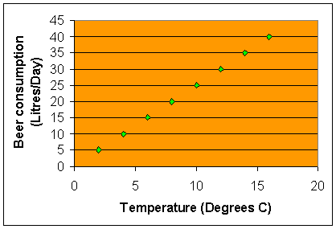
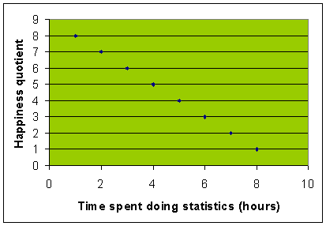
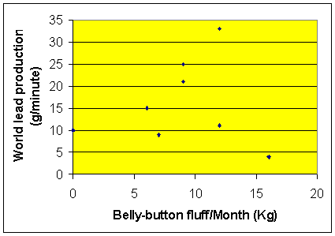
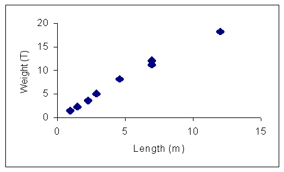

Spearman's rank correlation coefficient
If you have two variables and you want to see if they are connected
with each other (correlated), this is the test for you. It will
also measure the strength of any correlation. You need at least
eight pairs of data and any suspected relationship should be roughly
a straight line one. You can check this out by plotting a quick
scattergram.
As temperature rises beer consumption goes up in exact proportion. The hotter it gets the more beer is consumed. This is perfect positive correlation. If you calculated Spearman's Rank Correlation Coefficient (rs) for this data you would get a value of +1 (plus one)
It seems from this
graph that the longer you spend doing statistics, the less happy
you become. In fact happiness declines in exact proportion as
number of hours spent at the statistical grindstone increase.
This is perfect negative correlation.
If you calculated rs for this pair of variables
you would get a value of -1 (minus one)
Oddly enough, there appears to be no correlation between these two variables. A change in one appears to have no predicable effect on the other. There is no correlation. If you calculated rs for this pair of variables you would get a value of 0 (zero)
Usually you will obtain a value that tends towards one of the extremes, perfect anything is very rare (sigh.....). It is also worth pointing out that sometimes two variables might correlate by coincidence. Occasionally, your daily rate of toothpaste use might show a strong positive correlation to monthly sales of Noddy goes to Town in the Enid Blyton Superstore in Rejkyavick. This does not necessarily imply a causal relationship.
A worked example:
Using a fishing net and a metre rule, a Dale Fort student collected this data from a local blue whale population
It looks as if blue whales get heavier as they get longer. Weight and length seem to be positively correlated. We can use rs to measure the strength of this correlation thus:
| Length (m) | Rank length | Weight (T) | Rank weight | Difference | Difference squared |
| 1 | 1 | 1.5 | 1 | 0 | 0 |
| 1.5 | 2 | 2.3 | 2 | 0 | 0 |
| 2.3 | 3 | 3.6 | 3 | 0 | 0 |
| 4.6 | 5 | 8.2 | 5 | 0 | 0 |
| 2.9 | 4 | 5.1 | 4 | 0 | 0 |
| 7 | 6.5 | 11.2 | 6 | 0.5 | 0.25 |
| 7 | 6.5 | 12.1 | 7 | -0.5 | 0.25 |
| 12 | 8 | 18.2 | 8 | 0 | 0 |
Columns one and three are the original length and weight data. The second column is the length data ranked. Each piece of data has been put in order from lowest to highest.
The smallest length (1 metre) has been given a rank of 1. The next smallest length (1.5 metres) has been given a rank of 2 and so on.
A small problem occurs when we reach the two items of length data
that tied (there are two 7 metre
lengths). Deal with these by sharing the two ranks that the two
items of data occupy.
In this case the two 7 metre whales occupy ranks 6 and 7. Calculate
the average rank:
6 + 7 = 13, 13/2 = 6.5
You do the same for multiple ties, add up the appropriate ranks and share them out equally among the tied values.
Finally our 12 metre length is ranked 8.
Do the same with the other set of data (weight). You must do it the same way around i.e. from lowest to highest in our example.
Next subtract one rank from the other to get the difference in ranks (d)
Next square the differences
Next add up the squared differences = 0.5
Now calculate rs from this formula:
 Where:
rs = Spearman's Rank Correlation Coefficient
Where:
rs = Spearman's Rank Correlation Coefficient
n = Number of pairs of data, Sigma = the sum of
Our answer is very close to +1, hence we can say that length
and weight are strongly positively correlated. Even more thrillingly,
we can use rs as an hypothesis testing statistic. Every time you
use this test your null hypothesis will be:
"There is no correlation
between the two sets of data".
To accept or reject this hypothesis you must compare your value
with critical values obtained from the table below:
| Significance level>>>>>>>> | ||||
| Number of pairs of data (n) | 10% | 5% | 2% | 1% |
| 5 | 0.9 | 1 | 1 | |
| 6 | 0.829 | 0.886 | 0.943 | 1 |
| 7 | 0.714 | 0.786 | 0.893 | 0.929 |
| 8 | 0.643 | 0.738 | 0.833 | 0.881 |
| 9 | 0.6 | 0.683 | 0.783 | 0.833 |
| 10 | 0.564 | 0.648 | 0.746 | 0.794 |
| 12 | 0.506 | 0.591 | 0.712 | 0.777 |
| 14 | 0.456 | 0.544 | 0.645 | 0.715 |
| 16 | 0.425 | 0.506 | 0.601 | 0.665 |
| 18 | 0.399 | 0.475 | 0.564 | 0.625 |
| 20 | 0.377 | 0.45 | 0.534 | 0.591 |
| 22 | 0.359 | 0.428 | 0.508 | 0.562 |
| 24 | 0.343 | 0.409 | 0.485 | 0.537 |
| 26 | 0.329 | 0.392 | 0.465 | 0.515 |
| 28 | 0.317 | 0.377 | 0.448 | 0.496 |
| 30 | 0.306 | 0.364 | 0.432 | 0.478 |
In our case with 8 pairs of data the critical value of rs at 5% significance is 0.738. Our value is bigger than this so we can reject the null hypothesis and say that there is a statistically significant positive correlation between the two variables. If we did the investigation a large number of times we would expect a different result due to chance only 5% of the time. May your ranking be joyful………….
This technique is very useful for all manner of investigations of the sort that students do for course work. The sort of questions it will help you address might be: Is there a correlation between species diversity and volume in rock pools? Is there a correlation between species diversity and degree of trampling on a footpath? Does point quadrat data give comparable results to grid quadrat data? Does the population density of mice increase with proximity to the cheese factory? Is there a relationship between density of mayfly nymphs and current speed? Is the mean length of a seaweed correlated to the height it occurs at? etc etc
Looking for a next step?
The FSC offers a range of publications, courses for schools and colleges and courses for adults, families and professionals that relate to the seashore environment. Why not find
out more about the FSC?

FEEDBACK
Do you have any questions?
Copyright © 2008 Field Studies Council

Creative Commons Attribution-Noncommercial-No Derivative Works 3.0 Licence .
Site Statistics by Opentracker